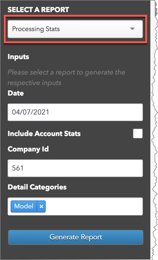
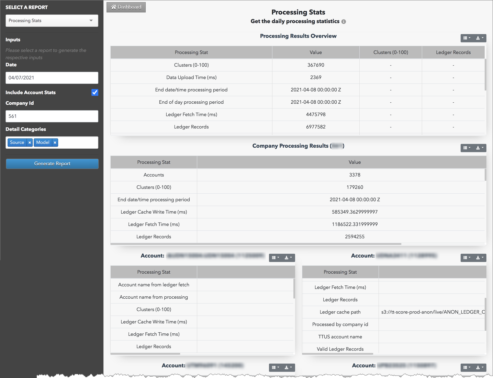

As a Score administrator, you can generate compliance reports that quantify cluster statistics for your entire company and for individual traders. Reports can be generated from the "Reports" tab on the Score dashboard. Existing compliance reports can also be viewed on this tab.
The following types of reports can be generated in TT Score:
After generating a report, you can select which statistics to display and download each set of data from the report as needed.
Note: You must have administrator permissions in Setup in order to generate reports. As a TT Score administrator, you can generate reports for your company and view data for all accounts that your users have access to, including accounts shared with your company. As a TT Score account administrator, you can generate reports only for the accounts assigned to you.
Generating a TT Score Summary Stats report
The summary stats report contains statistics for your entire company, as well as statistical data sorted by surveillance model per trader, account, or instrument.
To generate a Summary Stats report:
{% include report-step1.html %}
- Select Summary Stats in the Select a Report field in the reports data selection panel.
- Enter data for the following Inputs fields in the panel:
- Start Date - End Date — Sets the time period for reporting the statistics.
- Group By — Allows you to filter the report by "trader", "account", or "instrument".
- Display By — Sorts and displays statistics by surveillance model.
- Click Generate Report.
The report is displayed on the screen.

Each section of the report contains statistics in the following columns:
- Model — Name of the surveillance model. This column is displayed for company level statistics, which can be viewed only by Score administrators.
- Trader/Account/Instrument — The name of the trader/account/instrument. This column is displayed per surveillance model based on your "Group By" data selection.
- % High Scoring — The percentage of clusters with a score of 75 - 100.
- Change % High Scoring — Shows the percentage change in high scores since the last time period (Start Date - End Date) the report was generated. Periods must be of the same duration in order to calculate this change.
- Clusters (0-100) — Total number of clusters scored by the model.
- Clusters (1-100) — Total number of clusters receiving a score.
- Clusters (75-100) — Total number of clusters receiving a high score.
- Max Score — The highest cluster score.
- Mean Score (0-100) — The mean of all clusters scored by the model.
- Mean Score (1-100) — The mean of all clusters with a score greater than "0".
- Mean Score (75-100) — The mean of all clusters with a high score.
- Min Score (0-100) — The lowest score of the clusters.
- Min Score (1-100) — The lowest score of the clusters with a score greater than "0".
- Min Score (75-100) — The lowest score of the clusters that received high scores.
- Prev Period % High Scoring — The percentage change of clusters with a score of 75 - 100 from the previous period.
- Prev Period Clusters (0-100) — The total number of clusters scored by the model in the previous period.
- Prev Period Clusters (1-100) — Total number of clusters receiving a score in the previous period.
- Prev Period Clusters (75-100) — Total number of clusters receiving a high score in the previous period.
- Prev Period Max Score — The highest cluster score in the previous period.
- Prev Period Mean Score (0-100) — The mean of all clusters scored by the model in the previous period.
- Prev Period Mean Score (1-100) — The mean of all clusters with a score greater than "0" in the previous period.
- Prev Period Mean Score (75-100) — The mean of all clusters with a high score in the previous period.
- Prev Period Min Score (0-100) — The lowest score of the clusters in the previous period.
- Prev Period Min Score (1-100) — The lowest score of the clusters with a score greater than "0" in the previous period.
- Prev Period Min Score (75-100) — The lowest score of the clusters that received high scores in the previous period.
Generating a TT Score Summary Stats Trends report
Using the Reports tab, you can generate an interactive report that displays trends in suspect trading activity in your company. The Summary Stats Trend report is similar to the summary stats report, but it also provides a trend analysis of the specified time period for your entire company grouped by model, trader, account or instrument.
To generate a Summary Stats Trends report:
{% include report-step1.html %}
- Select Summary Stats Trends in the Select a Report field in the reports data selection panel.
- Enter data for the following Inputs:
- Start Date - End Date — Sets the time period for reporting the statistics.
- Group By — Allows you to filter the report by "trader", "account", or "instrument".
- Display By — Sorts and displays statistics by surveillance model.
- Summary Interval — Sets which days within the time period to show data (e.g., an interval of "2" would show data every other day within the start and end dates.)
- Metrics — Sets what type of data to display in the report. Select one or more of the following:
- Perc high scoring — Shows the percentage of high scoring clusters.
- Clusters (0-100) — Total number of clusters scored by the model.
- Clusters (75-100) — Total number of clusters receiving a high score.
- Clusters (1-100) — Total number of clusters receiving a score.
- Max Score — The highest cluster score.
- Mean Score (0-100) — The mean of all clusters scored by the model.
- Mean Score (1-100) — The mean of all clusters with a score greater than "0".
- Mean Score (75-100) — The mean of all clusters with a high score.
- Min Score (0-100) — The lowest score of the clusters.
- Min Score (1-100) — The lowest score of the clusters with a score greater than "0".
- Min Score (75-100) — The lowest score of the clusters that received high scores.
- Company ID — Generates and displays the total processing stats for your company.
- Click Generate Report.
The interactive charts in the report are displayed on the screen. A company summary chart is at the top of the report and the selected grouping is populated below. Data is shown at each interval based on your metrics and shows trends in the amount of suspect trading activity per model and for all models combined.
Note: As you click a model on the screen, the statistics and trends are adjusted in the report for that model.

Generating a TT Score Processing Statistics report
The processing statistics report shows the quantity and type of data processed by TT Score over a selected period of time for your company. Processing data can be included per surveillance model, trader, account, instrument, and TT source.
To generate a Processing Statistics report:
{% include report-step1.html %}
- Select Processing Stats in the Select a Report field in the reports data selection panel.

- Enter data for the following Inputs fields in the panel:
- Date — Sets the time period for reporting the statistics.
- Include Account Stats — Includes processing stats on a per account basis. This setting is optional.
- Company ID — Generates and displays the total processing stats for your company.
- Detail Categories — Generates processing statistics for a specific category of data. Select one of the following:
- Model: Shows statistics per problematic trading model.
- Trader: Shows stats per trader in your company.
- Source: Includes processing stats for specific TT components.
- Instrument: Includes statistics per instrument traded by your company.
- Click Generate Report.
The report is displayed on the screen.

The report includes the following columns:
- Processing Stat — Lists the type of processing statistics. The column appears in the "Processing Results Overview" at the top of the report, the "Company Processing Results" section, and per account if included.
- Value — Shows the amount of clusters or ledger records processed, and the time (ms) and duration of each process.
- Clusters (0-100) — The total number of clusters processed by a surveillance model or TT service.
- Ledger Records — The total number of records in Ledger that were processed by a surveillance model
or TT source.
Viewing a report in TT Score
To view a generated report in Score, select the Reports tab on the Score dashboard and click View Report.
The selected report is displayed on the screen. The data selection panel for the report is also displayed on the left of the screen.
Tip: Hover on the "i" by the report title to view more details about the report.

Click to show/hide the columns of statistics to display for each set of data in the report. Check or uncheck each checkbox in the column menu to show or hide a column.

Exporting a TT Score report
To export data from the report, click  and select an output file format. The data will be exported to the "downloads" folder on your workstation or laptop.
and select an output file format. The data will be exported to the "downloads" folder on your workstation or laptop.

Deleting a TT Score report
Reports can be deleted one at a time or in bulk. To delete multiple reports at once, select each report and click Delete under the Reports tab on the Score dashboard.